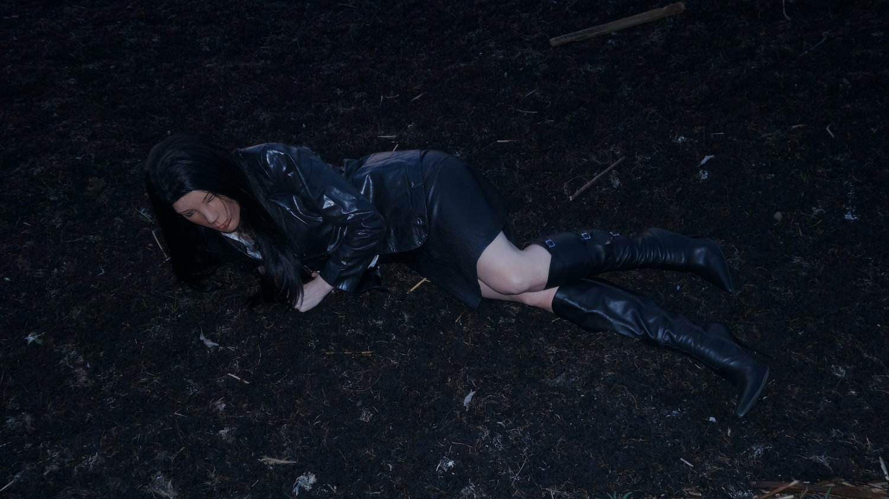
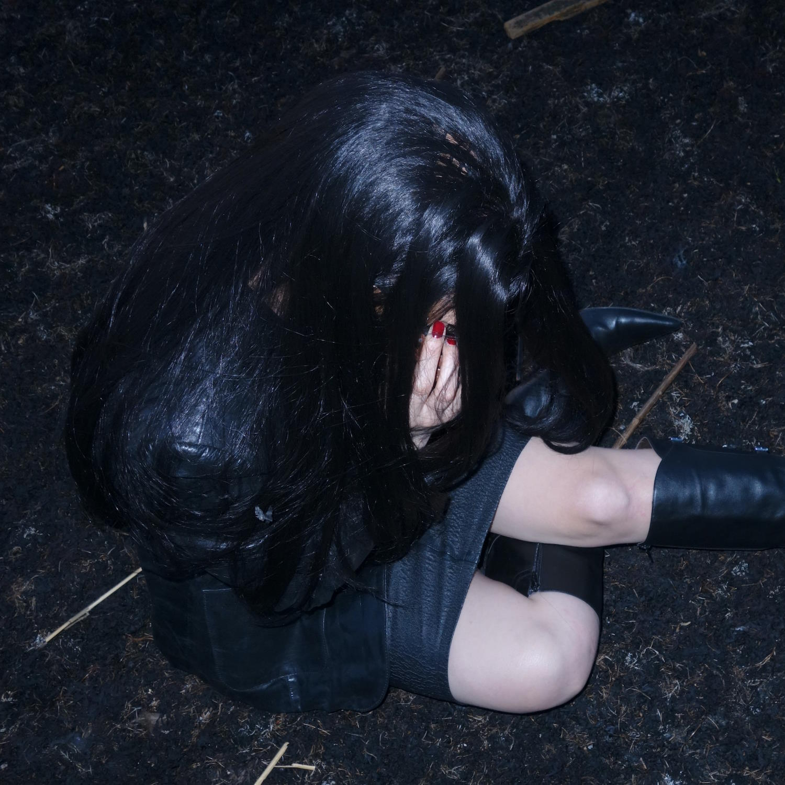

Residency at the Kanuti Guild HALL2024There I was having just distinguished what I knew was the last moment as my previous self. I suppose my exhilaration was that I was already there. As I look back on my life, it seems that my whole existence has been a preparation for this. No gimmicks, no long psychologist sessions, no self-care practices, no willpower or discipline required. Permanent. If you’re expecting me to inform you about the terrible consequences that you’re lazy, untalented, weak, stupid shit then I must disappoint you. If that was going to work for you, it would already have happened. You might find some of the things I might say difficult to believe. However, you will not only be believing, but you’ll also wonder how you could ever think otherwise. Even those hateful years as a gallerist were valuable in helping to unravel the trap. They say that you can’t fool all the people all of the time but I believe that the conditioning has done just that. I also believe I’m the first to fully understand this trap. If I appear to be arrogant, let me add, it was no credit to me, just the circumstances of my life. So, when are you stopping this? Tomorrow? Next year? Stop kidding yourself, the trap is designed to hold you for life. Remember, that you have absolutely nothing to lose. You don’t have to believe me. I have seen it happen to many people. You can choose to be one of them. In the residency, I’m diving into the world of character creation in search of the overlap of fiction and autobiography. I’m curious about how aesthetics can convey socially aware perspectives. As a work method, I‘m embodying shadow. It's a sequence of the Persona project where I move from collective to personal, from performative identity to hidden. https://saal.ee/resident/keldrisaali-residentuur-3254/ |
|  |
|  |
| ← |